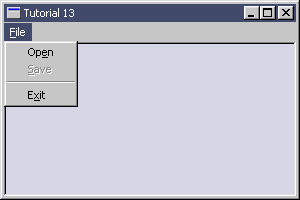

| Sulaiman Chang Personal Website |
|
Tutorial 13 : Memory Mapped Files
format PE GUI 4.0
entry start
include '%fasminc%\win32a.inc'
; +-----------------------+
; | menu item declaration |
; +-----------------------+
MI_OPEN equ 110
MI_SAVE equ 120
MI_EXIT equ 190
section '.data' data readable writeable
sTitle db 'Tutorial 13',0
sClsName db 'TUT13',0
hWindow dd ?
hInstance dd ?
msg MSG
wc WNDCLASS
dOTitle db 'Open File',0
dOFilter db 'All Files (*.*)',0,'*.*',0,0
dOBuffer: times 260 db 0
dOOfn OPENFILENAME
hFileR dd ? ;file read handle
hFileW dd ? ;file write handle
hFileM dd ? ;file mapped handle
pFileM dd ? ;pointer for the starting address of mapped file
hMenu dd ? ;menu handle
szFileWritten dd ? ;size number of bytes written
section '.code' code readable executable
start:
; +------------------------------+
; | registering the window class |
; +------------------------------+
invoke GetModuleHandle,NULL
mov [hInstance],eax
mov [wc.hInstance],eax
mov [wc.style],CS_HREDRAW or CS_VREDRAW
mov [wc.lpfnWndProc],window_procedure
mov [wc.lpszClassName],sClsName
mov [wc.lpszMenuName],30
mov [wc.hbrBackground],COLOR_WINDOW+1
invoke LoadIcon,NULL,IDI_APPLICATION
mov [wc.hIcon],eax
invoke LoadCursor,NULL,IDC_ARROW
mov [wc.hCursor],eax
invoke RegisterClass,wc
; +--------------------------+
; | creating the main window |
; +--------------------------+
invoke CreateWindowEx,\
WS_EX_CLIENTEDGE,\
sClsName,\
sTitle,\
WS_OVERLAPPEDWINDOW or WS_VISIBLE,\
CW_USEDEFAULT,\
CW_USEDEFAULT,\
300,\
200,\
NULL,\
NULL,\
[hInstance],\
NULL
mov [hWindow],eax
; +---------------------------+
; | entering the message loop |
; +---------------------------+
window_message_loop_start:
invoke GetMessage,msg,NULL,0,0
or eax,eax
je window_message_loop_end
invoke TranslateMessage,msg
invoke DispatchMessage,msg
jmp window_message_loop_start
window_message_loop_end:
invoke ExitProcess,0
; +----------------------+
; | the window procedure |
; +----------------------+
proc window_procedure,hWnd,uMsg,wParam,lParam
push ebx esi edi
cmp [uMsg],WM_CREATE
je wmCREATE
cmp [uMsg],WM_COMMAND
je wmCOMMAND
cmp [uMsg],WM_DESTROY
je wmDESTROY
wmDEFAULT:
invoke DefWindowProc,[hWnd],[uMsg],[wParam],[lParam]
jmp wmBYE
wmCREATE:
invoke GetMenu,[hWnd]
mov [hMenu],eax
mov [dOOfn.lStructSize],sizeof.OPENFILENAME
push hInstance
pop [dOOfn.hInstance]
mov [dOOfn.lpstrFilter],dOFilter
mov [dOOfn.lpstrFile],dOBuffer
mov [dOOfn.nMaxFile],260
jmp wmBYE
wmCOMMAND:
cmp [wParam],0xFFFF and MI_OPEN
je wmCOMMAND_MI_OPEN
cmp [wParam],0xFFFF and MI_SAVE
je wmCOMMAND_MI_SAVE
cmp [wParam],0xFFFF and MI_EXIT
je wmCOMMAND_MI_EXIT
jmp wmBYE
wmCOMMAND_MI_EXIT:
invoke DestroyWindow,[hWnd]
jmp wmBYE
wmCOMMAND_MI_OPEN:
mov [dOOfn.Flags],OFN_FILEMUSTEXIST or OFN_PATHMUSTEXIST or\
OFN_LONGNAMES or OFN_EXPLORER or OFN_HIDEREADONLY
invoke GetOpenFileName,dOOfn
cmp eax,TRUE
je wmCOMMAND_MI_OPEN_TRUE
jmp wmBYE
wmCOMMAND_MI_OPEN_TRUE:
invoke CreateFile,\
dOBuffer,\
GENERIC_READ,\
0,\
NULL,\
OPEN_EXISTING,\
FILE_ATTRIBUTE_ARCHIVE,\
NULL
mov [hFileR],eax
invoke CreateFileMapping,\
eax,\
NULL,\
PAGE_READONLY,\
0,0,NULL
mov [hFileM],eax
mov eax,dOBuffer
movsx edx,[dOOfn.nFileOffset]
add eax,edx
invoke SetWindowText,[hWnd],eax
invoke EnableMenuItem,[hMenu],MI_OPEN,MF_GRAYED
invoke EnableMenuItem,[hMenu],MI_SAVE,MF_ENABLED
jmp wmBYE
wmCOMMAND_MI_SAVE:
mov [dOOfn.Flags],OFN_LONGNAMES or OFN_EXPLORER or OFN_HIDEREADONLY
invoke GetSaveFileName,dOOfn
cmp eax,TRUE
je wmCOMMAND_MI_SAVE_TRUE
jmp wmBYE
wmCOMMAND_MI_SAVE_TRUE:
invoke CreateFile,\
dOBuffer,\
GENERIC_READ or GENERIC_WRITE,\
FILE_SHARE_READ or FILE_SHARE_WRITE,\
NULL,\
CREATE_NEW,\
FILE_ATTRIBUTE_ARCHIVE,\
NULL
mov [hFileW],eax
invoke MapViewOfFile,[hFileM],FILE_MAP_READ,0,0,0
mov [pFileM],eax
invoke GetFileSize,[hFileR],NULL
invoke WriteFile,[hFileW],[pFileM],eax,szFileWritten,NULL
invoke UnmapViewOfFile,[pFileM]
invoke CloseHandle,[hFileM]
invoke CloseHandle,[hFileR]
invoke CloseHandle,[hFileW]
invoke SetWindowText,[hWnd],sTitle
invoke EnableMenuItem,[hMenu],MI_OPEN,MF_ENABLED
invoke EnableMenuItem,[hMenu],MI_SAVE,MF_GRAYED
jmp wmBYE
wmDESTROY:
invoke PostQuitMessage,0
wmBYE:
pop edi esi ebx
return
endp
section '.idata' import data readable writeable
library KERNEL32, 'KERNEL32.DLL',\
USER32, 'USER32.DLL',\
COMDLG32, 'COMDLG32.DLL'
import KERNEL32,\
GetModuleHandle, 'GetModuleHandleA',\
lstrcat, 'lstrcat',\
CreateFileMapping, 'CreateFileMappingA',\
MapViewOfFile, 'MapViewOfFile',\
UnmapViewOfFile, 'UnmapViewOfFile',\
GetFileSize, 'GetFileSize',\
CreateFile, 'CreateFileA',\
WriteFile, 'WriteFile',\
CloseHandle, 'CloseHandle',\
ExitProcess, 'ExitProcess'
import USER32,\
RegisterClass, 'RegisterClassA',\
CreateWindowEx, 'CreateWindowExA',\
DefWindowProc, 'DefWindowProcA',\
LoadCursor, 'LoadCursorA',\
LoadIcon, 'LoadIconA',\
SetWindowText, 'SetWindowTextA',\
GetMenu, 'GetMenu',\
EnableMenuItem, 'EnableMenuItem',\
GetMessage, 'GetMessageA',\
DestroyWindow, 'DestroyWindow',\
TranslateMessage, 'TranslateMessage',\
DispatchMessage, 'DispatchMessageA',\
PostQuitMessage, 'PostQuitMessage'
import COMDLG32,\
GetOpenFileName, 'GetOpenFileNameA',\
GetSaveFileName, 'GetSaveFileNameA'
section '.rsrc' resource data readable
directory RT_MENU,appMenu
resource appMenu,\
30,LANG_NEUTRAL,menuMain
menu menuMain
menuitem '&File',0,MFR_POPUP + MFR_END
menuitem 'Op&en',MI_OPEN,0
menuitem '&Save',MI_SAVE,0,MF_GRAYED
menuseparator
menuitem 'E&xit',MI_EXIT,MFR_END
Result : |
| Copyright © 2004 Sulaiman Chang. All Rights Reserved. |